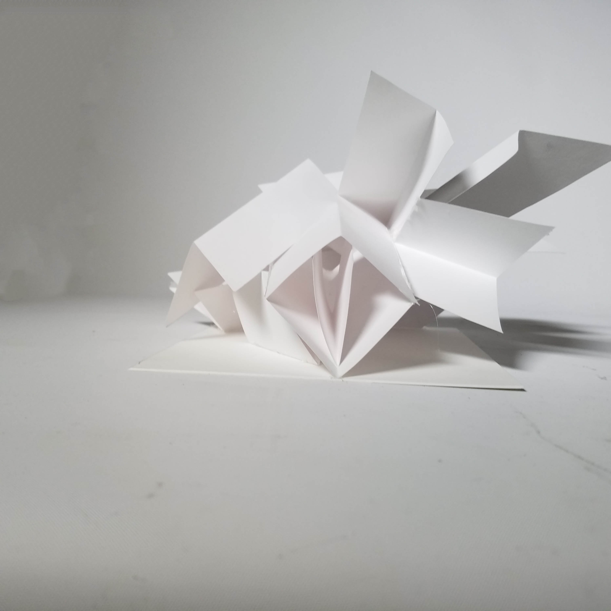
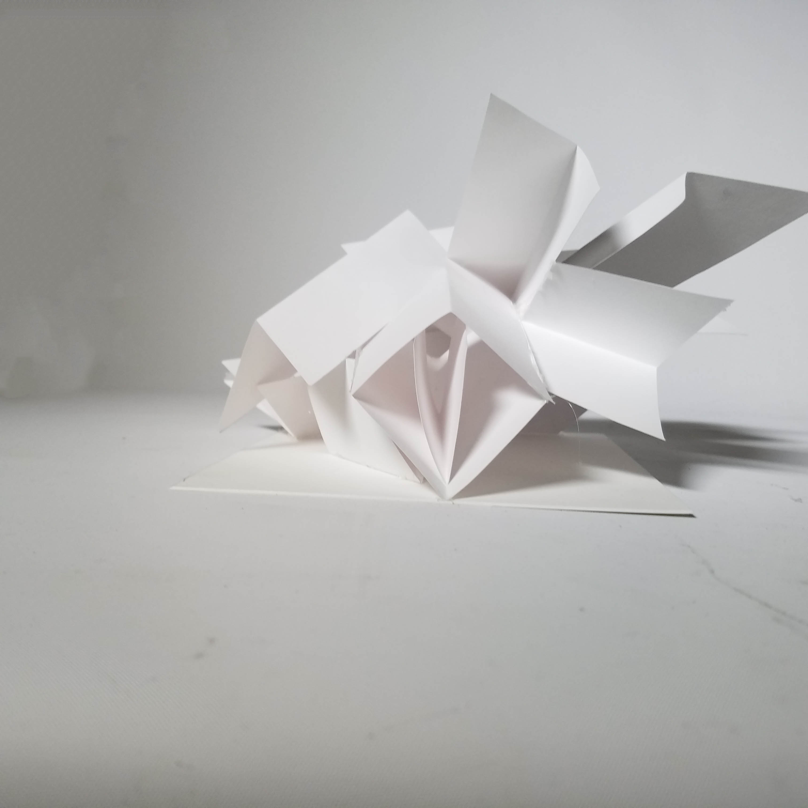
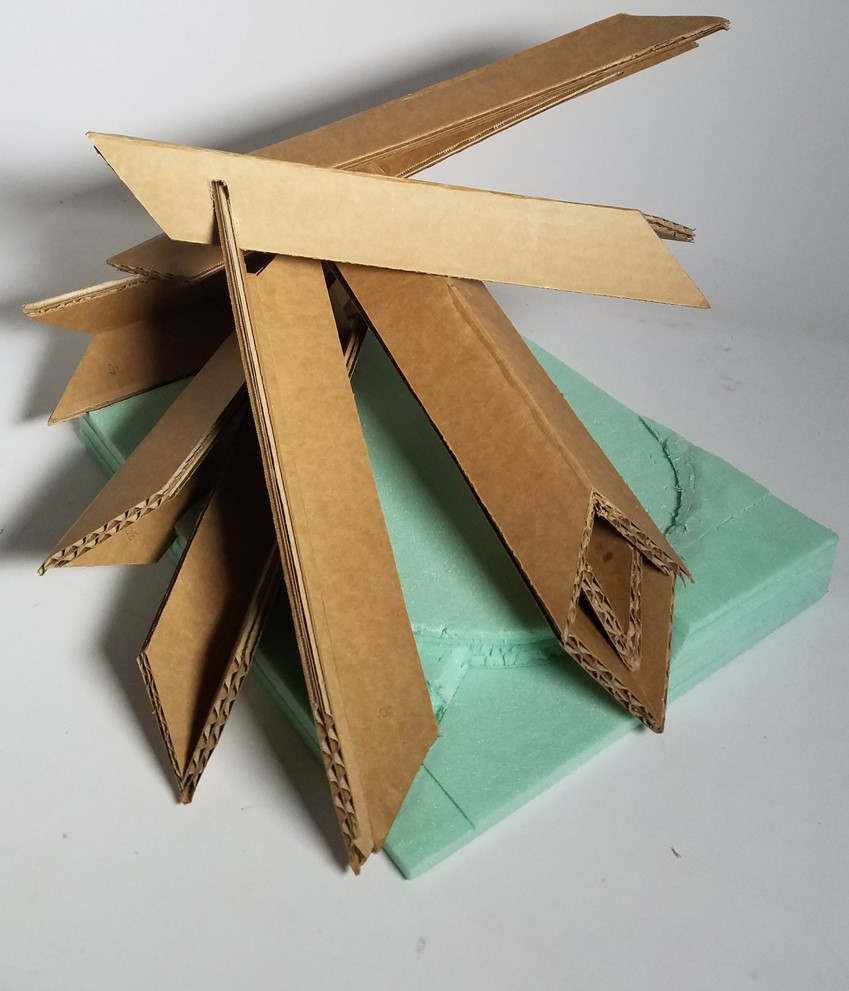
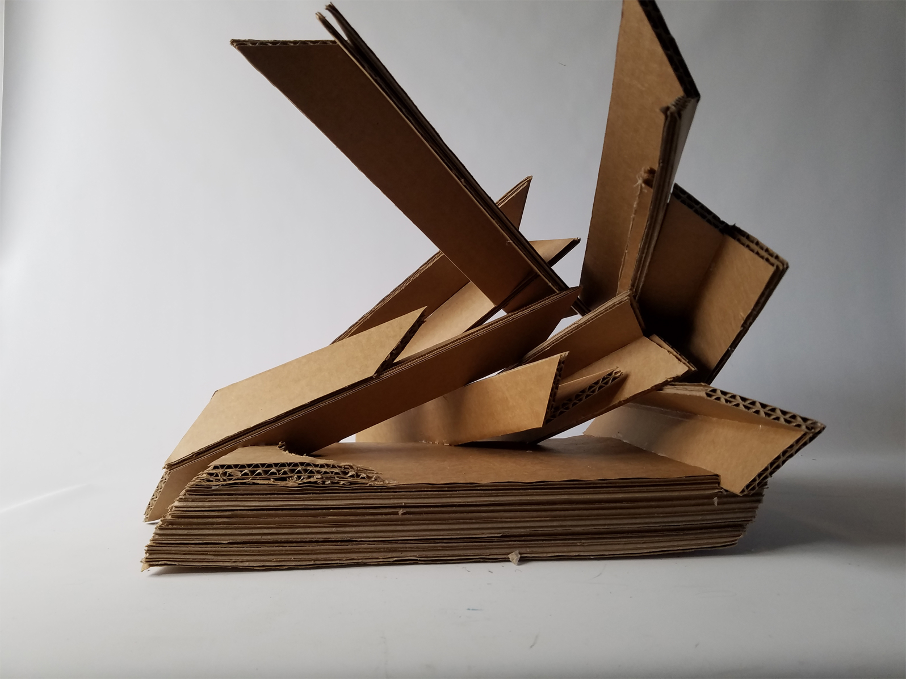
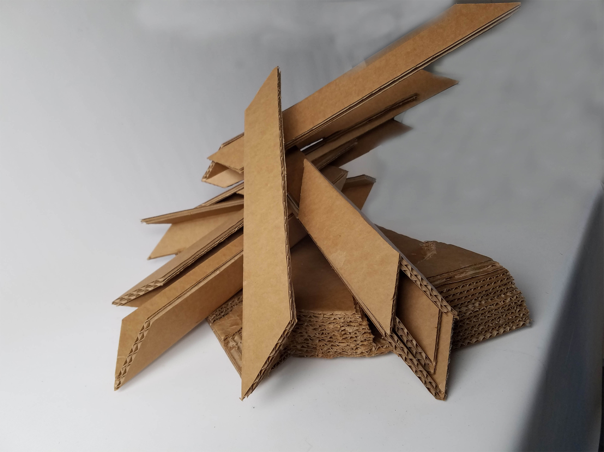
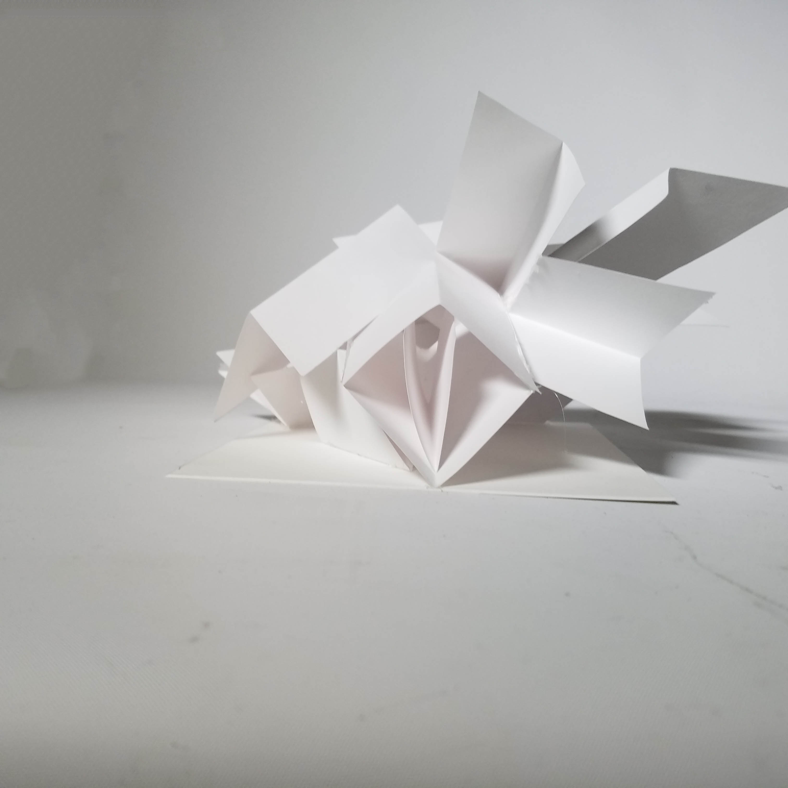

 
 
Drawing Performance
During the first half of the spring semester, I teamed up with a classmate to do the "Drawing Performance" project. This assignment required us to construct hardline drawings based on our own individually assigned tools, and the motions that they created. From those drawings, my teammate and I designed a physical, sculptural model that could depict the motions from both our objects, combined together. We went through several iterations, starting from basic paper construction to a final wood model made of ash and poplar wood.
Some qualities of motion that we wanted to depict were: violent, dynamic carvings based on my tool (a gardening fork) and repitition and rotation from my partner's tool (a "slap-chop"). To emphasize the deep, intense carvings, we extended the individual pieces to illustrate the idea of a fork piercing the ground. The back portion of the model evokes the idea of repitition by "folding over" the other pieces, contrasting the direction of those pieces, and also breaking through the space bordered by the base. Lastly, we had a portion of the model that was cut out from the front area, be repositioned onto the side without the extruding pieces, to illustrate the motion of digging into the ground and moving the dirt from the ground onto the side or some other position.
